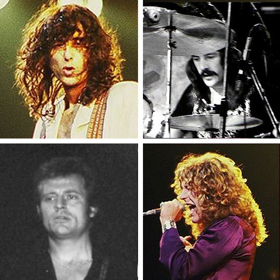

Led Zeppelin are one of the best-selling music artists of all time; their total record sales are estimated to be between 200 to 300 million units worldwide. They achieved eight consecutive UK number-one albums and six number-one albums on the US Billboard 200, with five of their albums certified Diamond in the US. Rolling Stone magazine described them as "the heaviest band of all time", "the biggest band of the Seventies", and "unquestionably one of the most enduring bands in rock history". They were inducted into the Rock and Roll Hall of Fame in 1995; the museum's biography of the band states that they were "as influential" during the 1970s as the Beatles were during the 1960s.
Led Zeppelin have collected many honours and awards throughout the course of their career. They were inducted into the Rock and Roll Hall of Fame in 1995, and the UK Music Hall of Fame in 2006. Among the band's awards are an American Music Award in 2005, and the Polar Music Prize in 2006. Led Zeppelin were the recipient of a Grammy Lifetime Achievement Award in 2005, and four of their recordings have been inducted into the Grammy Hall of Fame. They have been awarded five Diamond albums, as well as fourteen Multi-Platinum, four Platinum and one Gold album in the United States, while in the UK they have five Multi-Platinum, six Platinum, one Gold and four Silver albums. Rolling Stone named Led Zeppelin the 14th-greatest artist of all time in 2004.In 2003, Rolling Stone's 500 Greatest Albums of All Time list included Led Zeppelin at number 29, Led Zeppelin IV at number 66, Physical Graffiti at number 70, Led Zeppelin II at number 75, and Houses of the Holy at number 149. And in 2004, on their 500 Greatest Songs of All Time list, Rolling Stone included "Stairway to Heaven" at number 31, "Whole Lotta Love" at number 75, "Kashmir" at number 140, "Black Dog" at number 294, "Heartbreaker" at number 320, and "Ramble On" at number 433. In 2005, Page was appointed an Officer of the Order of the British Empire in recognition of his charity work, and in 2009 Plant was honoured as a Commander of the Order of the British Empire for his services to popular music. The band are ranked number one on VH1's 100 Greatest Artists of Hard Rock and Classic Rock's "50 best live acts of all time". They were named as the best Rock band in a poll by BBC Radio 2. They were awarded an Ivor Novello Award for "Outstanding Contribution to British Music" in 1977, as well as a "Lifetime Achievement Award" at the 42nd Annual Ivor Novello awards ceremony in 1997. The band were honoured at the 2008 MOJO Awards with the "Best Live Act" prize for their one-off reunion and were described as the "greatest rock and roll band of all time". Led Zeppelin were named as 2012 recipients of the Kennedy Center Honors.
Led Zepplin have written some amazing songs that are truly timeless. This continued for decades and they will go down as one of the greatest rock bands every to exist. Please view the rest of the page to see more information pictures and videos relating to Led Zeppelin. In the future we are hoping to expand the site to have a fan forum and shop for all Led Zepplin merchandise. Take the time to tell your friends about this site so the band can continue to get the love they deserve.